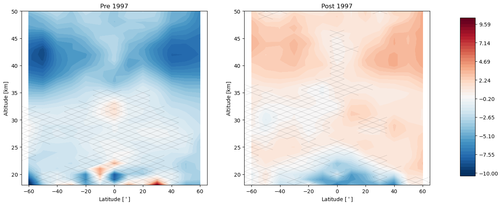

Trends with the SAGE II / OSIRIS / OMPS-LP Dataset¶
Here we calculate trends using the SAGE II / OSIRIS / OMPS-LP dataset by regressing to deseasonalized relative monthly zonal mean anomalies
[2]:
import xarray as xr
import numpy as np
from LOTUS_regression.regression import regress_all_bins
from LOTUS_regression.predictors import load_data
The data is in a single NetCDF4 file.
[3]:
MERGED_FILE = r'/home/runner/work/lotus-regression/lotus-regression/test_data//S2_OS_OMPS/MERGED_LOTUS.nc'
mzm_data = xr.open_dataset(MERGED_FILE, engine='netcdf4')
print(mzm_data)
<xarray.Dataset>
Dimensions: (altitude: 59, time: 387, mean_latitude: 13, month: 12)
Coordinates:
* altitude (altitude) float64 0.0 1.0 2.0 3.0 ... 55.0 56.0 57.0 58.0
* time (time) datetime64[ns] 1984-10-01 1984-11-01 ... 2016-12-01
latitude_bin (mean_latitude) object ...
* mean_latitude (mean_latitude) float64 -60.0 -50.0 -40.0 ... 50.0 60.0
* month (month) int64 1 2 3 4 5 6 7 8 9 10 11 12
Data variables:
anomaly (mean_latitude, time, altitude) float64 ...
relative_anomaly (mean_latitude, time, altitude) float64 ...
std (mean_latitude, time, altitude) float64 ...
relative_std (mean_latitude, time, altitude) float64 ...
count (mean_latitude, time, altitude) float64 ...
osiris_mzm (mean_latitude, month, altitude) float64 ...
sageii_mzm (mean_latitude, month, altitude) float64 ...
omps_mzm (mean_latitude, month, altitude) float64 ...
inst_flags (mean_latitude, time, altitude) float64 ...
[4]:
predictors = load_data('pred_baseline_pwlt.csv')
print(predictors.columns)
Index(['enso', 'solar', 'qboA', 'qboB', 'aod', 'linear_pre', 'linear_post',
'constant'],
dtype='object')
[5]:
results = regress_all_bins(predictors, mzm_data['relative_anomaly'], tolerance=0.1)
# Convert to ~ percent
results *= 100
print(results)
<xarray.Dataset>
Dimensions: (mean_latitude: 13, altitude: 59)
Coordinates:
* mean_latitude (mean_latitude) float64 -60.0 -50.0 -40.0 ... 50.0 60.0
* altitude (altitude) float64 0.0 1.0 2.0 3.0 ... 55.0 56.0 57.0 58.0
Data variables: (12/16)
enso (mean_latitude, altitude) float64 nan nan ... 1.132 0.7805
enso_std (mean_latitude, altitude) float64 nan nan ... 0.4722 0.4676
solar (mean_latitude, altitude) float64 nan nan ... 0.4617 0.7597
solar_std (mean_latitude, altitude) float64 nan nan ... 0.7352 0.7282
qboA (mean_latitude, altitude) float64 nan nan ... -0.4209
qboA_std (mean_latitude, altitude) float64 nan nan ... 0.4594 0.456
... ...
linear_pre (mean_latitude, altitude) float64 nan nan ... 3.14e-15
linear_pre_std (mean_latitude, altitude) float64 nan nan ... 5.111e-15
linear_post (mean_latitude, altitude) float64 nan nan ... 3.783 3.063
linear_post_std (mean_latitude, altitude) float64 nan nan ... 1.157 1.15
constant (mean_latitude, altitude) float64 nan nan ... -6.536 -4.447
constant_std (mean_latitude, altitude) float64 nan nan ... 4.103 4.085
[6]:
import LOTUS_regression.plotting.trends as trends
trends.pre_post_with_confidence(results, x='mean_latitude', y='altitude', ylim=(18, 50), log_y=False, figsize=(16, 6),
x_label='Latitude [$^\circ$]', y_label='Altitude [km]', pre_title='Pre 1997',
post_title='Post 1997')
